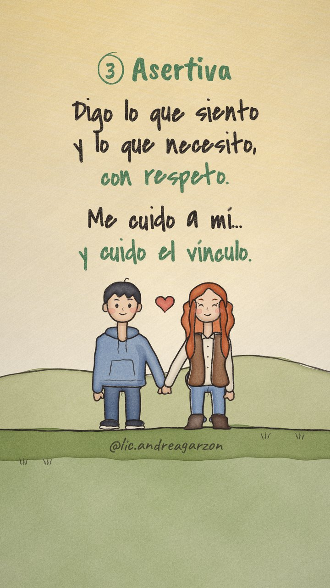
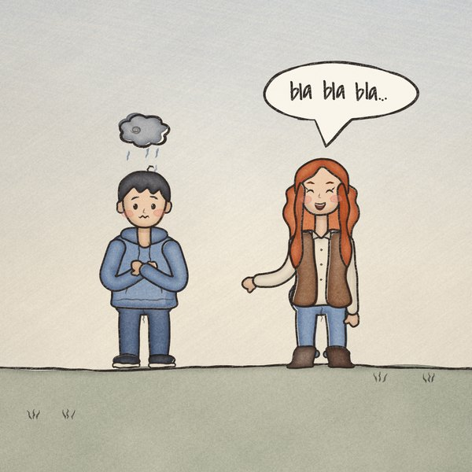
Pasiva 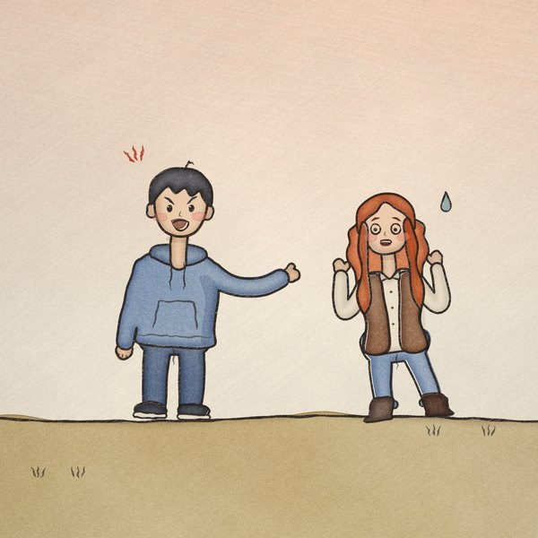
Agresiva 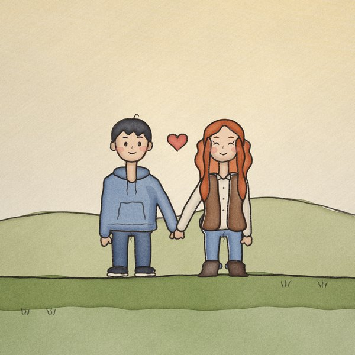
Asertiva
Los mismos dos personajes humanos, redibujados con más cuidado, en tres paletas distintas. Cada versión muestra primero la ficha de cuerpo entero, después un cuadro del reel y las tres escenas.
La más fiel a tu referencia de @neuro_class: él con buzo azul y capucha, ella pelirroja con pecas, camisa, chaleco marrón, jean arremangado y botas.
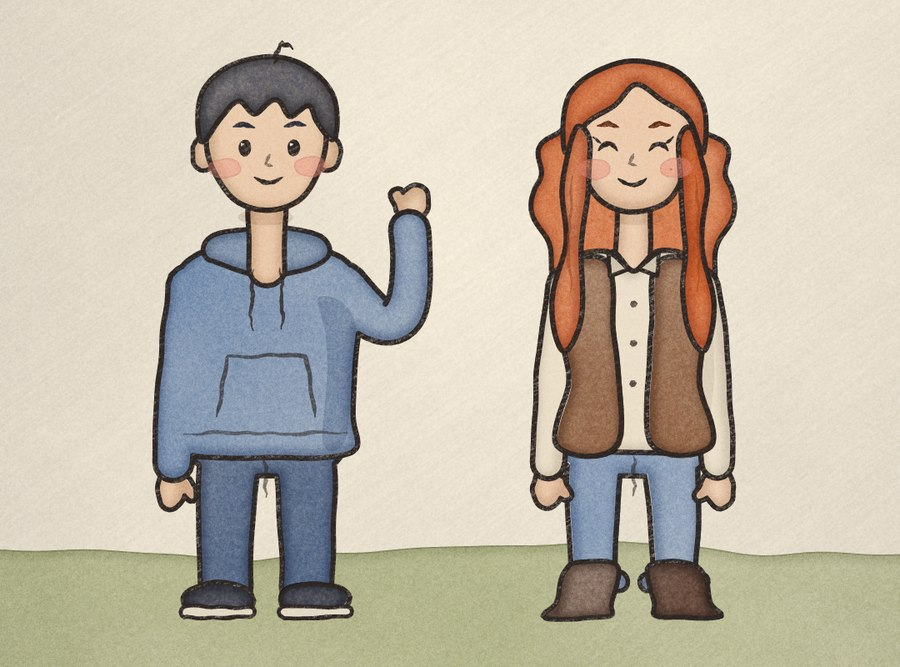




Colores tierra y cálidos. Él con rulos cortos y suéter mostaza, ella con pelo afro y aros dorados. Suma diversidad y se ve muy natural con el fondo del reel.
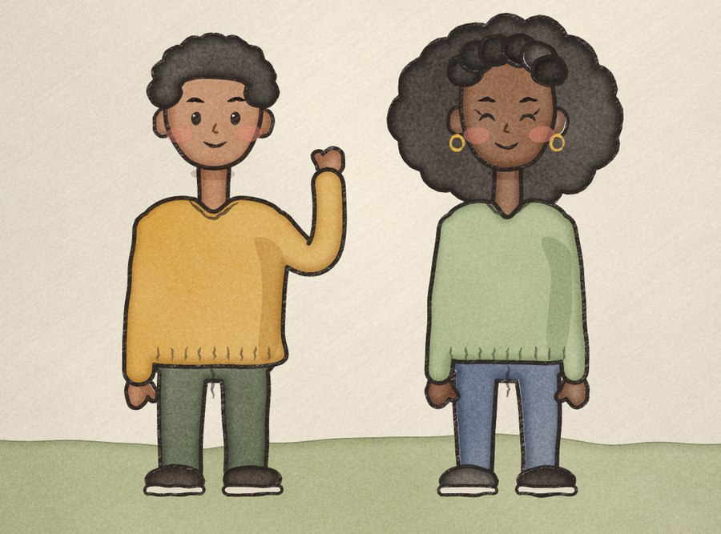
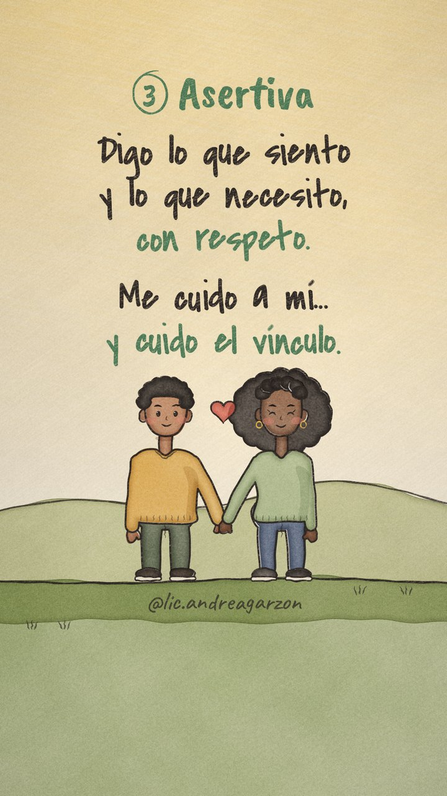
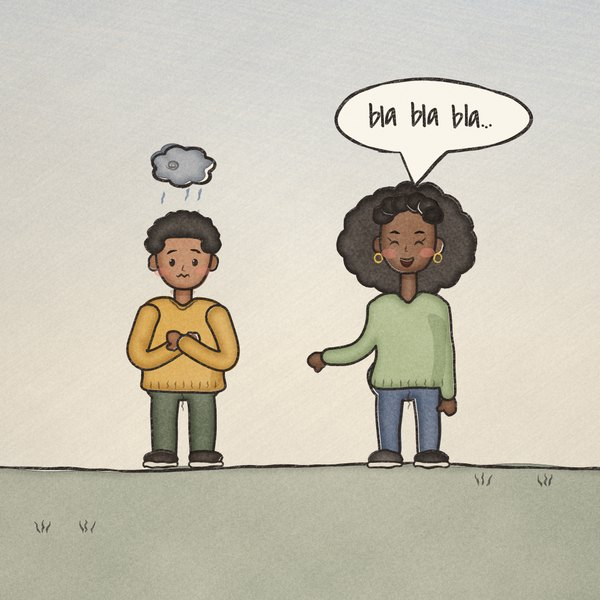
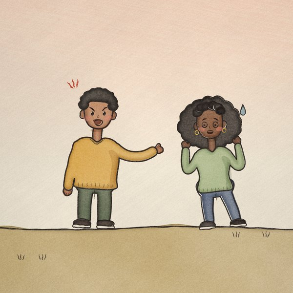
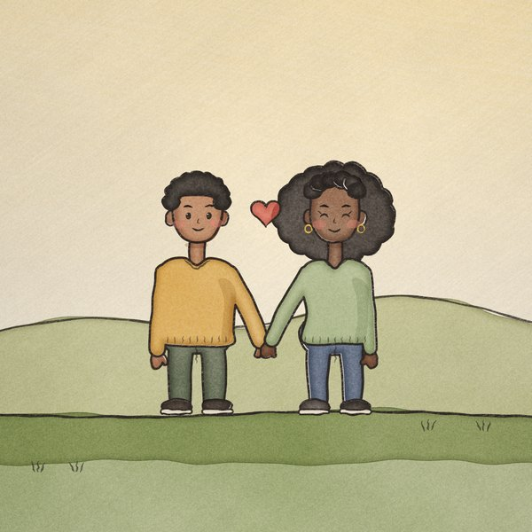
La más pastel y luminosa. Él con anteojos redondos, raya al costado y buzo lila, ella con melena rubia, hebilla, cárdigan coral y botas.
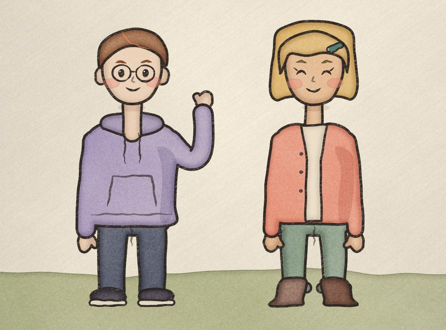
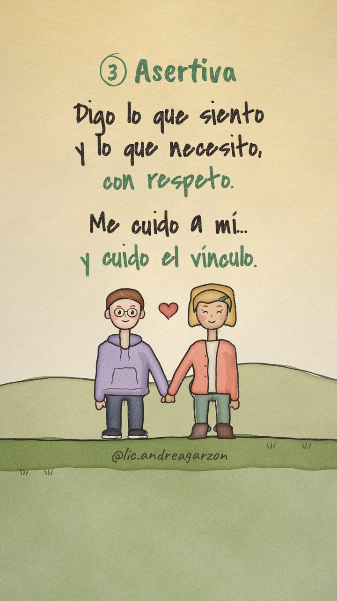
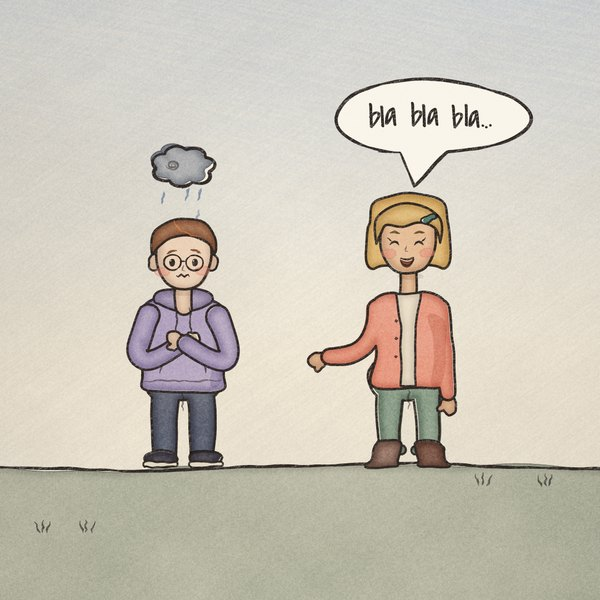
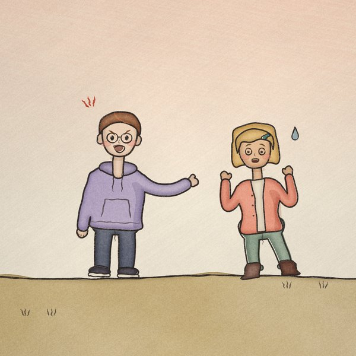
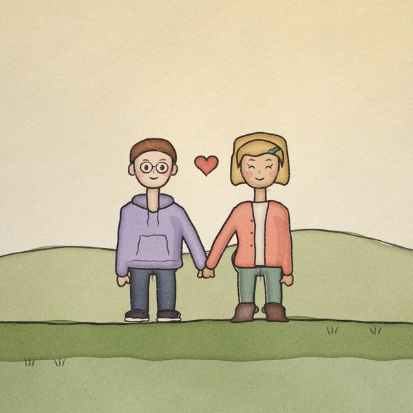
Decime el número, o una combinación (por ejemplo, el chico de la 3 con la chica de la 1). Con eso rehago el video completo, con el mismo guion, textos, música y tu usuario.